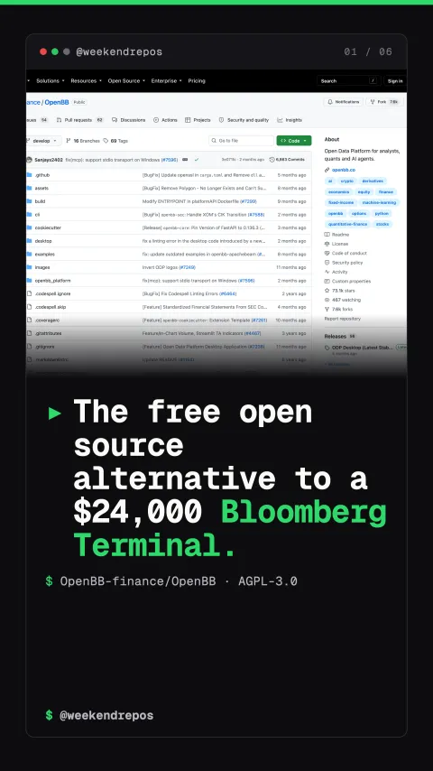

OpenBB-finance/OpenBB
The open source Bloomberg Terminal alternative for analysts and quants

The free open source alternative to a $24,000 Bloomberg Terminal.
Bloomberg Terminal costs $24,000 a year per seat.
First, institutional financial data has always been locked behind absurd paywalls. A proprietary terminal license demands massive annual contracts, shutting out independent developers and researchers.
$24k/year Bloomberg seat · enterprise data paywall
Open Data Platform unifies 50 financial data providers in one engine.
Second, OpenBB solves data fragmentation with its Open Data Platform. Instead of writing separate API integrations for every vendor, you access SEC filings, options, crypto, and macro data through one unified interface.
Open Data Platform · 50+ financial data feeds unified
Query equities, options, and macro data into Pandas with two lines.
Third, fetching data in Python takes just 2 clean lines of code. The OpenBB SDK standardizes responses across every provider, returning analysis-ready Pandas and Polars dataframes instantly.
Standardized Python SDK · seamless Pandas & Polars export
OpenBB Workspace delivers interactive multi-pane charts and AI agents.
Fourth, analysts get a modern multi-pane workspace. It features interactive technical charts, portfolio analytics, and built-in MCP server integrations so AI agents can query live market data autonomously.
OpenBB Workspace · institutional charting & AI agents
Over 73,000 GitHub stars power this quant finance revolution.
With over 73,000 GitHub stars and an active global community, OpenBB is democratizing investment research. Clone the repo or run pip install openbb to start building.
73.5k stars · Python · built by OpenBB Community